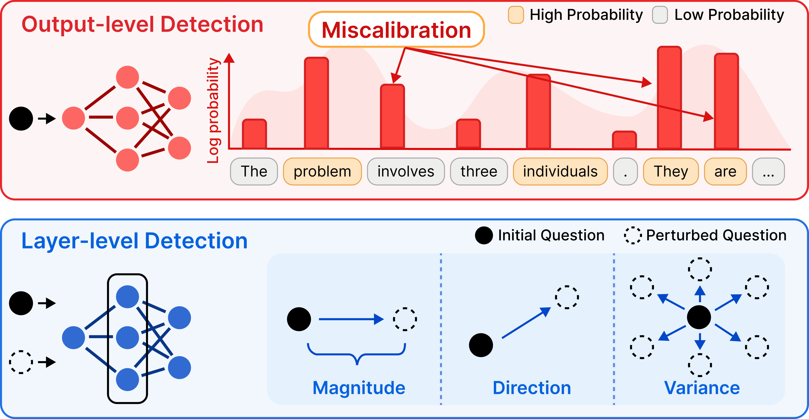
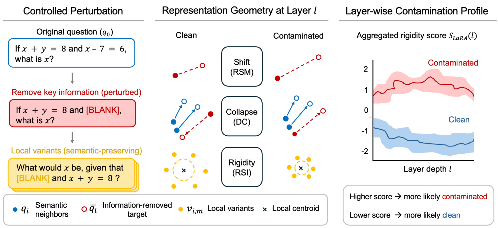
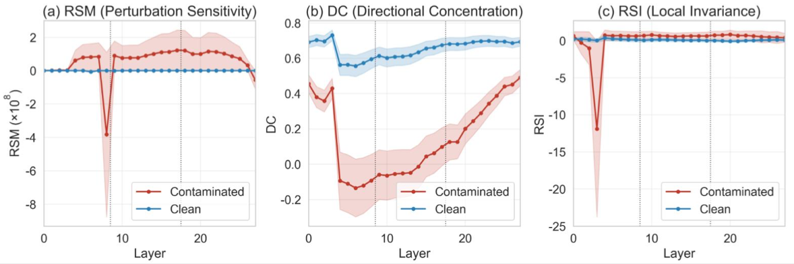
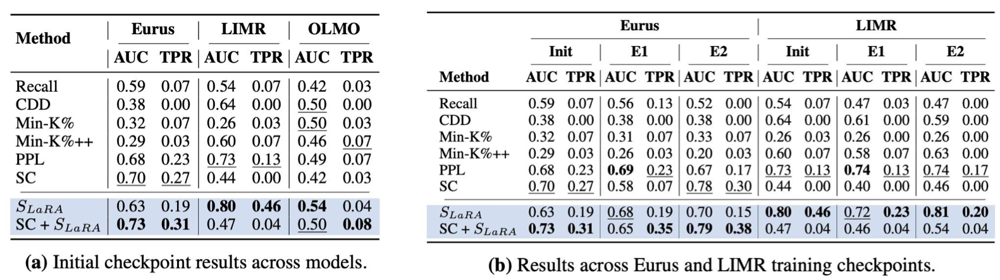
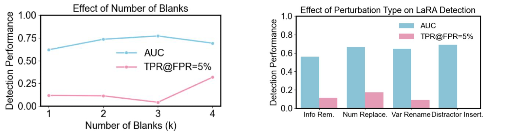
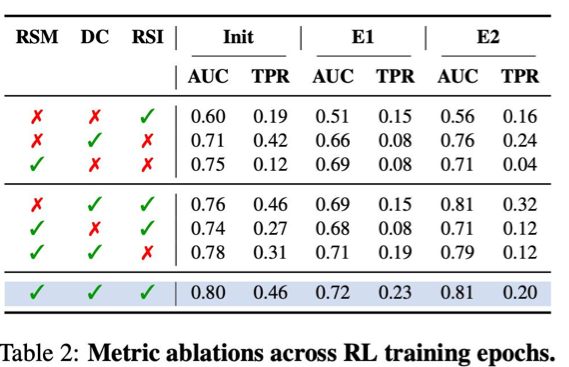

RSM
Representation Shift Magnitude
How much does the representation move?
Measures sensitivity to removing key information from the original question.
Findings of EMNLP 2026
TL;DR
LaRA detects contamination by examining how internal representations change across layers. Its key hypothesis: memorization leaves geometric fingerprints in hidden representations.

Reinforcement learning (RL) post-training has shown to improve reasoning in large language models (LLMs). However, there has been little exploration on the problem of data contamination in RL post-training, potentially undermining generalization and evaluation reliability of the training process itself.
Existing detection methods primarily rely on output-level signals such as likelihood or entropy, which become unreliable for RL-trained models since RL shapes behavior through trajectory-level rewards rather than token likelihoods. We propose LaRA, a layer-wise representation analysis framework for detecting contamination in RL post-trained LLMs.
LaRA introduces three complementary metrics, measuring perturbation sensitivity, directional collapse, and local representation rigidity under controlled perturbations. We find that contamination produces progressive geometric deviations across layers, including amplified perturbation sensitivity, stronger directional collapse, and enhanced local rigidity. Based on our findings, we also develop a contamination detection protocol that aggregates representation-level deviations across layers and metrics.
Experiments on RL-trained reasoning models show that our protocol outperforms existing output-level baselines for contamination detection.
Source: LaRA, arXiv v2, licensed under CC BY 4.0.
Output-level detectors examine statistics such as likelihood and entropy. RL optimizes trajectory-level rewards rather than token likelihood, motivating a closer look at the model's hidden representations.

LaRA removes key information from a question and generates semantic-preserving local variants. Three complementary metrics track the resulting geometry across transformer layers:
RSM
How much does the representation move?
Measures sensitivity to removing key information from the original question.
DC
Where does it move?
Examines the directional alignment of representation shifts among semantically related questions.
RSI
How stable is the representation?
Measures local variability under semantic-preserving perturbations to characterize representation rigidity.

Higher LaRA score more likely contaminated. Lower score more likely clean.
The poster compares LaRA with output-level baselines across Eurus, LIMR, and OLMO, and across training checkpoints. The results show that representation-level signals can improve detection and complement output-level metrics, with gains varying by model and checkpoint.

The poster evaluates different numbers of blanks and several perturbation types: information removal, number replacement, variable renaming, and distractor insertion. Detection performance varies across these settings, supporting the analysis of robustness to perturbation choices.


The poster highlights DC as the strongest standalone detection signal and emphasizes the complementary role of all three metrics.
Combining RSM, DC, and RSI yields AUC values of 0.80, 0.72, and 0.81 at the initial, E1, and E2 checkpoints, respectively.
The motivation and method overview figures are available as original PDFs above. Results and analysis figures are reproduced from the LaRA poster. See the full paper for the complete method, experimental setup, and limitations.
@misc{gwak2026lara,
title={LaRA: Layer-wise Representation Analysis for Detecting Data Contamination in RL Post-Training},
author={Minju Gwak and Minseo Kwak and Dongseok Lee and Guijin Son and Alan Ritter and Jaehyung Kim},
year={2026},
eprint={2605.29888},
archivePrefix={arXiv},
primaryClass={cs.LG},
doi={10.48550/arXiv.2605.29888},
url={https://arxiv.org/abs/2605.29888}
}